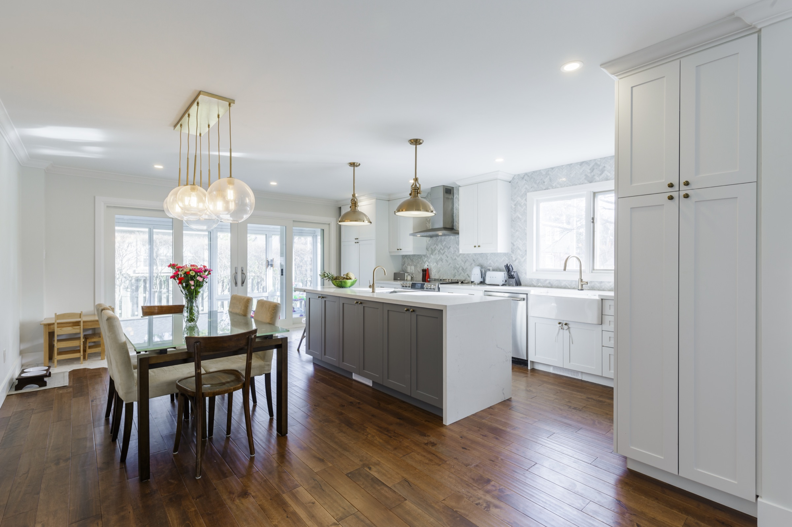
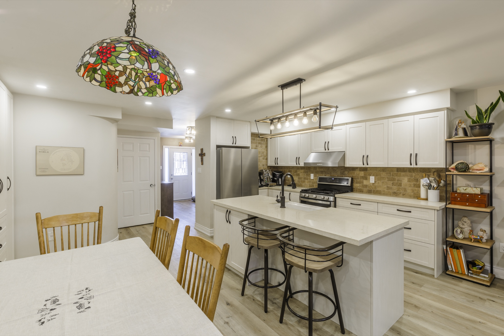
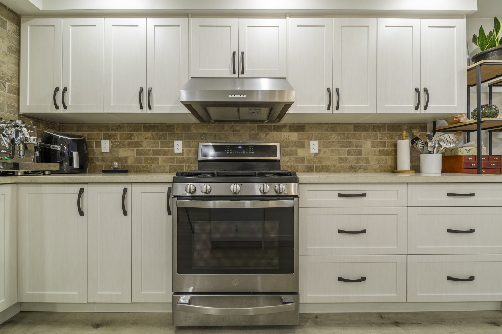

Begin with the home.
Trim, openings, ceiling height, windows, floors, and the surrounding rooms decide how much detail the kitchen needs.
Traditional Kitchens
Framed cabinetry, familiar architectural detail, and balanced proportions suit classic homes while the storage and layout remain practical now.
Discuss a traditional kitchen
Transitional does not need to mean more decoration. It can mean a measured profile, a familiar proportion, warm hardware, and details that belong with the architecture—combined with clear storage and contemporary daily function.
Trim, openings, ceiling height, windows, floors, and the surrounding rooms decide how much detail the kitchen needs.
Frame widths, panels, mouldings, handles, and junctions are controlled so the room feels settled rather than busy.
Interior storage, appliance integration, movement, light, and work areas remain designed for present-day use.


Made specific
We will use architecture, light, routines, storage, appliances, and the surrounding rooms to turn the visual idea into one practical kitchen.